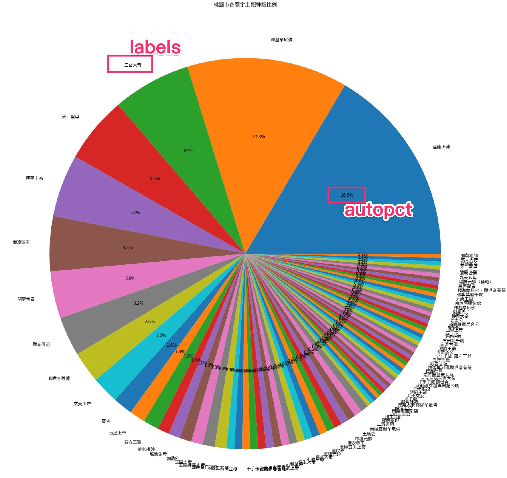

資料科學第五週-Colab中圖要怎麼有中文、資料視覺化圓餅圖
資料視覺化是資料科學中重要的技能，用圖表幫助我們理解數據，找出模式和趨勢。常見圖型有長條圖、圓餅圖、折線圖等，Python工具如Matplotlib、Seaborn、Plotly、Bokeh可協助製作圖表。以桃園廟宇為例，透過圓餅圖呈現拜神分佈。調整顏色和細節可增加圖表視覺效果。結合AI和Cheatsheet，創造出更有趣的成果！
資料視覺化：讓數據說話的藝術
在資料科學的世界中，資料視覺化扮演著至關重要的角色。它不僅能幫助我們更好地理解複雜的數據集，讓我們迅速發現數據中的模式、趨勢和異常。還能以直觀、吸引人的方式呈現分析結果。
圖型分類
用圖說話，先以一張Kaggle大神的圖概括：
可根據要資料的「分佈」、「趨勢」或「關係」來繪圖：
分佈(Distribution)：圓餅圖、長條圖、核密圖(KDE)
趨勢(Trend)：折線圖、直方圖
關係(Relationship)：散佈圖、熱圖、回歸圖
各個圖的簡單解釋：
• 條形圖（Bar Chart）：用於比較不同組別之間的數量。
• 直方圖（Histogram）：用於顯示數據的分佈。
• 圓餅圖（Pie Chart）：用於顯示各部分佔總數的比例。
• 折線圖（Line Chart）：用於顯示數據隨時間變化的趨勢。
• 散佈圖（Scatter Plot）：用於顯示兩個變量之間的關係。
• 箱形圖（Box Plot）：用於顯示數據的分佈特徵，如中位數、四分位數和異常值。
長條圖(Bar Chart)和直方圖(Histogram)
就比較常搞混的長條圖和直方圖做一下解釋：
長條圖用於比較不同類別，直方圖用於展示連續數據的分佈。
舉例：長條圖適合顯示不同品牌的銷售量，直方圖則適合展示學生成績的分佈。
Python中的資料視覺化工具
Python提供了多種強大的視覺化庫，其中最常用的包括：
Matplotlib：基礎繪圖庫，適合創建靜態、動畫和互動式圖表。
Seaborn：基於Matplotlib的統計繪圖庫，提供更美觀的默認樣式。
Plotly：用於創建互動式和可發布的圖表。
Bokeh：專注於創建交互式視覺化，特別適合網頁應用。
先知道有哪些工具，在使用AI協助畫圖生成時，可以任君挑選。
查看分佈-以桃園的廟為例
先讀取桃園區有登記的廟宇：
1 | |

一樣先檢查有無缺失值：
1 | |
使用Unique，找一樣的神明
使用 unique() 函數可以找出一個資料欄中所有不重複的值。以下是使用方法：
1 | |

可以發現，三百多筆資料中，桃園所拜的主祀神祇非常廣泛，但還是有重複的廟宇
使用value_counts()，計算次數
如果想要進一步分析，我們可以使用 value_counts() 函數來計算每個神祇出現的次數：
1 | |
這會顯示每個神祇出現的次數，並按照次數由高到低排序。這有助於我們了解哪些神祇最常被主祀。
接著，我們就可以用圖來呈現這樣的分佈。
視覺化前的設定
載入模組-matplotlib
1 | |
要能在notebook(colab, jupyter)快速看圖型
1 | |
要能正常顯示中文需要使用plt.rc()這個函式
1 | |
1 | |
繪製圓餅圖
設定圖框大小與標題
1 | |

繪製圓餅圖
幾個關鍵參數
x:必填項，要計算的內容
labels:顯示圖表個比例項目的文字
autopct:顯示比例，
autopct='%1.1f%%' 是用來設定圓餅圖中顯示百分比的格式。
%: 表示後面的數字是格式說明1.1f: 表示顯示一個浮點數，總寬度為1，小數點後保留1位%%: 在格式字符串中表示一個百分號符號
因此，'%1.1f%%' 會將數值格式化為如 “12.3%” 的形式。
1 | |

如果繪的圖比原本更難判讀就失去圖的意義了，我們來調整一下
整理過小比例的資料
將比例較低的主祀神祇算在「其他」，這個圖主要可以凸顯桃園以哪位神明為大宗。
計算每個的佔比，小於n則列在其他
1 | |
計算比例
1 | |
將小於0.3%的都算在其他項目，加總起來。這裡因為df_count_ratio是一個Series，可以直接對欄位進行操作
1 | |

篩選比例大於N的神明
1 | |

重新繪圖
1 | |

結論
可以用圖表展示，讓人知道，在桃園常被拜的神明有哪些！
Cheat Sheet
以下提供官方的作弊表，總之有很多可以調整的地方，沒有常用是背不起來的：

例如我看了Cheat Sheet後，使用get_map()裡面的顏色
1 | |

根據現在df_count_ratio 需要的顏色(9個)來進行挑選
1 | |

繪圖時加入colors 這個參數，就調整完畢囉
1 | |
所以除了自己常用的幾個方法，也可以透過AI和參考資料，跳出舒適圈，做出意想不到的效果喔！